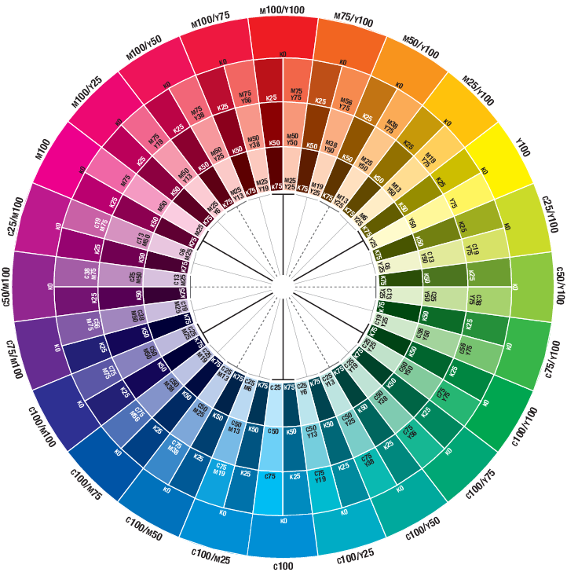

In addition to Scribus’s built-in Color Wheel, you can also use the Galaxy Color Harmonizer to create color harmonies. The major difference between the Scribus Color Wheel and the Galaxy Color Harmonizer is the color model: RYB (Scribus) vs. CMYK (Galaxy).
The Color Harmonizer doesn’t work in software (yet), but is nevertheless easy to use. The first step is to change the default palette to “Galaxy Color Harmonizer” or to import the palette into an existing file:
To create color harmonies, the low-resolution color wheel below may be sufficient, but if you need a reference of better quality, you can visit the Galaxy Gauge website, where you can either download a high-resolution image of the color wheel or order a printed Galaxy Color Map Pro reference, which includes the color wheel.

There are several ways to find attractive color combinations.
Choose two colors within two or three sectors. |
Choose a four-color combination. |
|
 |
||
Choose two colors opposite of each other on the circle. |
Using prior methods, move toward the center of the circle, making color darker by adding black (K). |
|
 |
 |
|
Choose a color’s related hue by moving either six spaces clockwise or six six spaces anti-clockwise. |
Using prior methods, move toward center of circle, making colors lighter. |
|
 |
||
Choose a 3-color combination. |
When using any of these methods, choose one color as a primary, and other color(s) as secondary or accent. |
|
 |
Note: Ink pigmentation is not always perfect. The values in the Color Harmonizer are ‘ideal’, but sometimes slight variations may give more pleasing results.
© 2013 Scientific Illustration Services Corp.